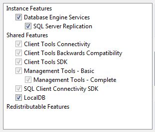
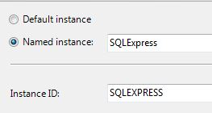

MRRisley:=("Setting up T-SQL")
Note: This guide is adapted from Itzik Ben-Gan's T-SQL Fundamentals, 3rd edition.

Back Home
Setting up T-SQL
Download MS SQL Express 2014 with Tools
- Follow link here.
- Select language.
- Click download.
- Check ExpressAndTools 64BIT\SQLEXPRWT_x64_ENU.exe and download.
Install
- Unless you have reason otherwise, select "New SQL Server stand-alone installation..." when prompted.
- Accept license terms when prompted.
- On Feature Selection window, ensure that you select LocalDB in addition to the default selections.
- On Instance Configuration window, ensure that you remember the named instance and Instance ID if you choose to change them. I recommend the default.
- Unless you have reason otherwise, press Next on Server Configuration screen.


Setup Local Server Instance
- Open SQL Server Management Studio.
- Click Cancel when prompted.
- Go to View -> Registered Servers
- A Registered Servers window should open with a "Database Engine." Expand the Database Engine by pressing the + symbol.
- Right-click on Local Server Groups.
- Tasks -> Register Local Servers
- It should register one server, which will now display under Local Server Groups.
- When you exit Management Studio and re-open it, the local server should be the default connection.
Here's the MS website for setting this up.
Download AdventureWorks 2014
This is a sample database provided by MS.
- Follow link here.
- Under "To install AdventureWorks", click the link under number (2), "download AdventureWorks-oltp-install-script.zip".
- Move or extract all files to C:\Samples\AdventureWorks. You may need to create the folders.
- Open the file instawdb.sql. Ensure that you connect to your local server.
- Click the Query menu at top and select SQLCMD mode. This is the command mode for SQL.
- Run the query by pressing F5 or pressing the run button.
- The code will execute with errors. This is because we do not have full-text search enabled.
- Ensure that you can see an AdventureWorks database and tables, shown below.

Download Accompanying Files for Ben-Gan
These are files to accompany T-SQL Fundamentals., 3rd ed. by Itzik Ben-Gan
- Follow link here.
- The zip file is a collection of scripts for each chapter. If running these scripts are required, the steps will be reviewed together with the concepts.